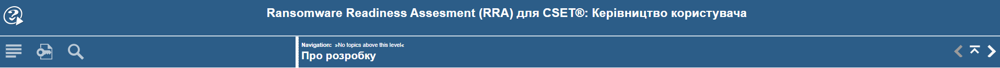
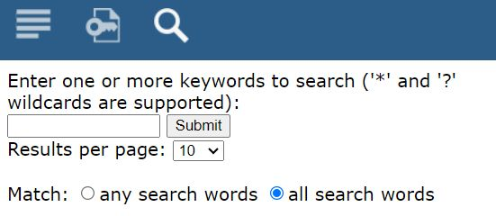

|
<< Click to Display Table of Contents >> Navigation: »No topics above this level« Про даний документ |
Інформація про документ
Даний документ є розробленим Керівництвом користувача по роботі з підсистемою нетехнічного оцінювання операційної стійкості та практик кібербезпеки організації CISA Cyber Resilience Review (CRR) у CSET. Даний документ є складовою частиною зазначеної підсистеми.
Про правовласника
Адаптація та локалізація на українську мову підсистеми CISA Cyber Resilience Review (CRR) здійснена ТОВ "СОФТЛІСТ" (надалі - Локалізатор), м. Київ, 2023-2024 р.р. © Всі права захищені.
У відповідності до чинного законодавства України у сфері інтелектуальної власності, дана локалізована версія Керівництва користувача (далі – Керівництво) не належить повному або частковому відтворенню без попередньої письмової згоди Локалізатора: ніяка частина цього документа не може бути скопійована, відтворена в будь-якій формі та/або змінена.
Передача третім особам
Тільки для внутрішнього використання.
Заборонена передача третім особам та комерційна реалізація.
За додатковою інформацією необхідно звертатись за адресою: order@softlist.ua.
Достовірність
Дане Керівництво пройшло перевірку на достовірність та точність.
Вказівки та описи, що містяться у ньому, визнані вірними для програмного забезпечення - підсистеми CISA Cyber Resilience Review (CRR) на момент підготовки та виходу даного Керівництва.
Деякі ілюстрації або пояснення в цьому Керівництві можуть відрізнятися від поточної версії через її покращення або реалізацію додаткового функціоналу.
Локалізатор залишає за собою право не відображати у цьому Керівництві користувача зміни, які можуть вноситися CISA (надалі – Розробник) під час випуску програмного забезпечення, але не впливають на функціональні показники програми.
Середовище розробки
Документ підготовлено у редакторі для створення довідкової системи Help & Manual версії 9.3.0.Версія англомовна.
Підтримка української мови в інтерфейсі розробником не передбачена.
Використано запропонований зазначеним редактором дизайн, яким підтримується формат публікації у Web (Webhelp/HTML 5).
Пояснення до можливостей верхньої панелі навігації:

Здійснюється перехід на офіційний сайт розробника редактора Help & Manual |
|
Здійснюється перехід до змісту розділів керівництва |
|
Ключові слова для пришвидшення пошуку у документі. Якщо такі слова не згенеровані, інформація не відображається. |
|
Здійснюється виклик функціоналу для здійснення пошуку:  Форма для здійснення пошуку інформації у документі
Пояснення: у пошуковому рядку введіть пошукове слово або словосполучення чи речення (підтримуються символи "*" та "?") натисніть на кнопку [Submit]. За замовчуванням виводиться до 10 знайдених елементів на сторінку. Для зміни виберіть необхіднне значення (10, 20, 50, 100) з випадаючого списку параметрів "Result pet page:". Підтримується пошук будь-якого пошукового слова (активація "any search word") та для всіх слів/словосполучення чи речення (активація "all search words").
|
|
Перехід до попереднього розділу |
|
Перехід до наступного розділу |
|
Перехід до головного розділу/підрозділу |
|
|
Navigation: »No topics above this level« - Навігація: «Немає тем вище цього рівня» |
Кнопки розгортання/згортання розділів |
підготовлено у редакторі Help & Manual 9.3.0
{kind=link}
{kind=link}